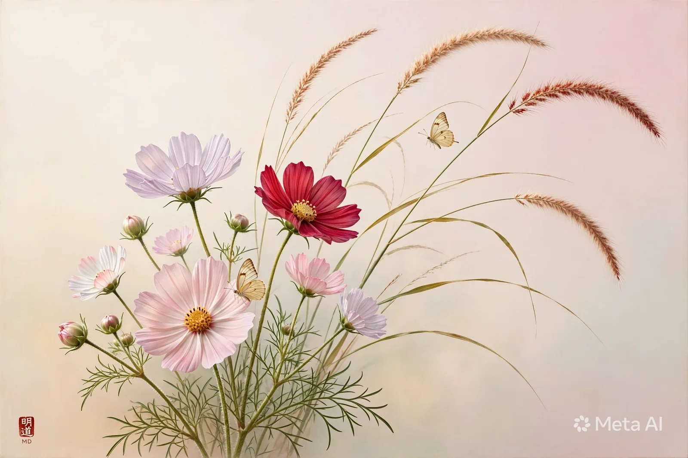
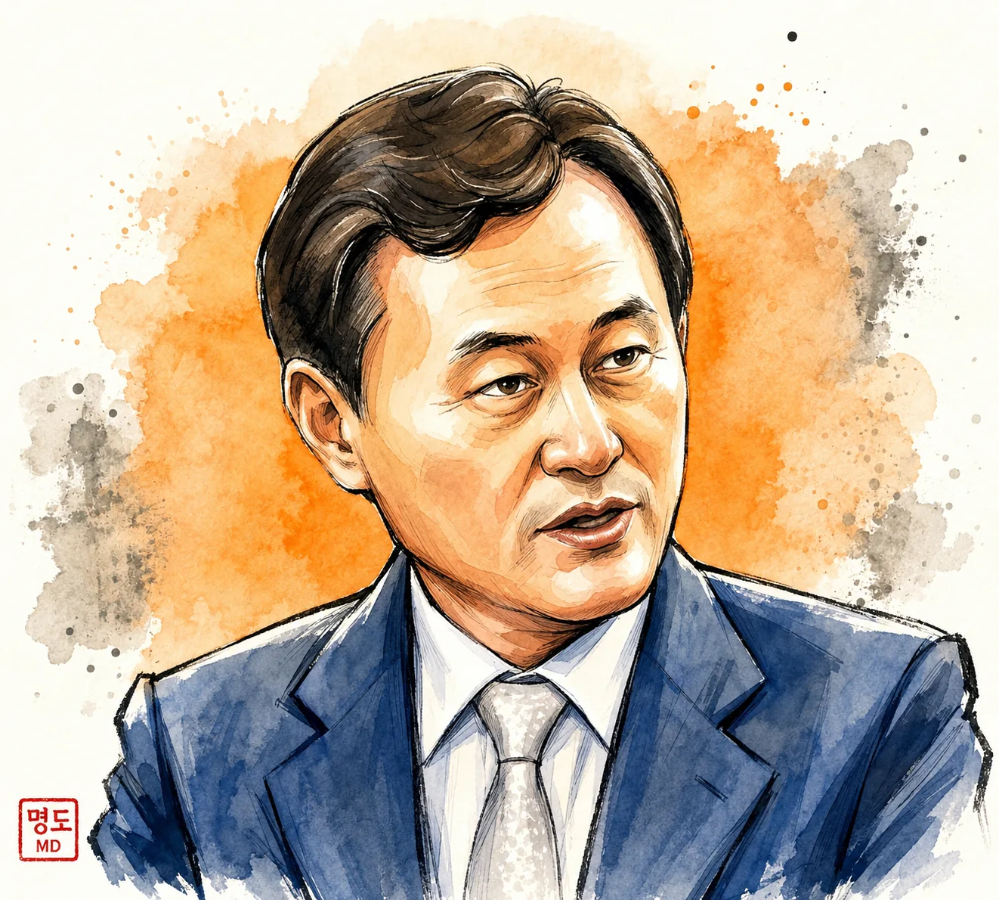
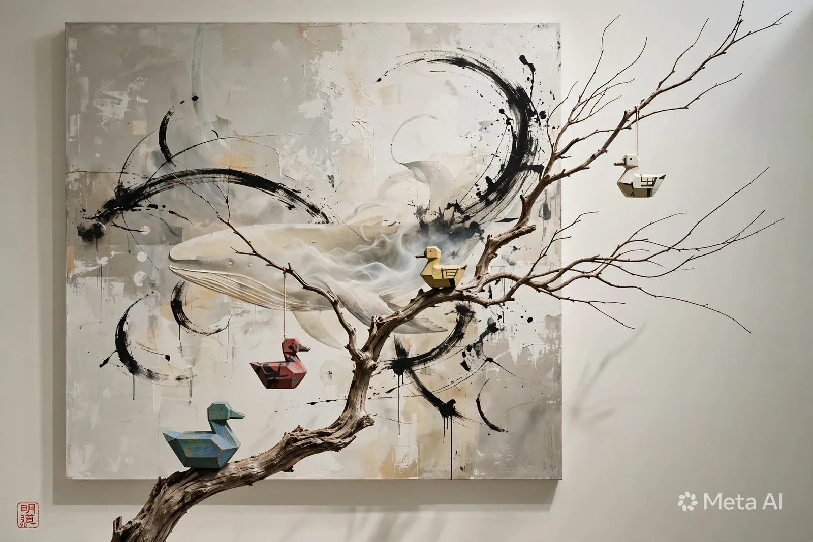

ART & LITERATURE · SPECIAL ESSAY
사물의 기억을 문학으로,
문학의 울림을 복합매체로
이 평론은 이번 디지털 특별호를 위해 새로 쓴 편집부의 비평입니다. 업로드 문서에 있는 기존 필자들의 시평과 구별됩니다.
시에서 그림으로, 그림에서 음악으로.
삶의 언어와 인공지능 기술이 만나 새롭게 펼치는 문학·예술의 현장.


작가 제공 이미지 · 일러스트 초상
사진에서 시를 발견하고, 시를 회화·음악·영상·디지털 전시로 확장한다. 작품에 내재한 감각을 잃지 않으면서도 기술을 새로운 표현의 도구로 활용하는 창작 실험을 이어 간다.
음성은 방문자 기기의 한국어 음성합성 기능으로 재생되며, 브라우저·운영체제에 따라 목소리가 다릅니다.
별도 교원자격: 중등 미술교사 · 컴퓨터교사 · 상담교사 / 작가 제공 자료 기준
“붓 대신 프롬프트로 그리자!”
전통예술의 감성과 인공지능 기술을 연결해 누구나 창작의 주체가 되는 시대를 지향한다. 문학·미술·음악·교육이 서로 이어지는 AI 융합예술 생태계를 모색한다.
작가가 제공한 회화를 원본의 구도와 낙관을 유지하여 수록했습니다. 작품명은 별도 확인 전까지 편집 제안 제목으로 표기합니다.
첨부된 《완성시 이명우》 55쪽을 대조해 동일 원문 반복 게재를 정리했습니다. 주제가 유사해도 문장이 다른 작품은 독립적으로 보존했습니다. 원문과 편집부가 새로 쓴 작품 소개를 구분합니다.

이 평론은 이번 디지털 특별호를 위해 새로 쓴 편집부의 비평입니다. 업로드 문서에 있는 기존 필자들의 시평과 구별됩니다.